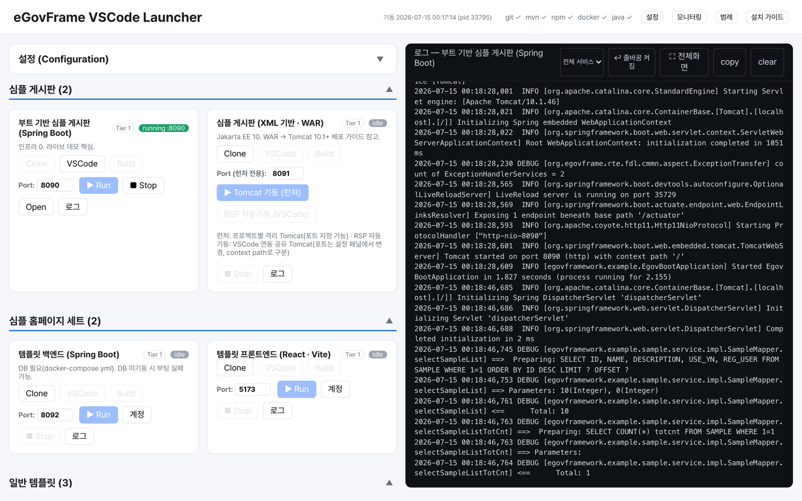

01
사용 설명
깨진 링크, 빠진 단계, 따라 했을 때 막히는 안내를 찾아봅니다.
예: 문서 제목 단계를 정리한 PR #729
### 필드 관리문서 · 설치 가이드eGovFRAME · CONTRIBUTOR FIELD GUIDE
작게 관찰하고, 근거를 모으고,
끝까지 확인하는 방법
2026년 실제 PR과 리뷰에서 배운 점 · 기존 기여 안내의 후속 자료
CONTENTS · 전체 목차
항목을 누르면 해당 슬라이드로 이동합니다.
01 · 관점
예: 파일 다운로드 이름을 가이드와 맞추고, 원인과 수정 방법을 PR #1167에서 설명했습니다.
assertEquals("attachment; filename=원본파일.txt", header); · 실제 테스트에 쓰인 단위 테스트 예
02 · 아이디어 찾기
깨진 링크, 빠진 단계, 따라 했을 때 막히는 안내를 찾아봅니다.
예: 문서 제목 단계를 정리한 PR #729
### 필드 관리문서 · 설치 가이드다시 만들 수 있는 버그나, 규칙이 분명한 순수 유틸리티를 살펴봅니다.
예: 파일명 규칙과 테스트를 함께 다룬 PR #1167
assertEquals(expected, actual);버그 · 작은 테스트실제로 쓰이는 취약 의존성, 실행 설정, 환경 안내를 확인합니다.
예: 업로드 경로와 지속 저장소를 보완한 PR #121
mountPath: /app/files보안 · 배포 · CI03 · 수정 전 확인
저장소의 역할, 기본 브랜치, 이미 있는 해결책부터 확인합니다.
예: 문서 저장소에는 안내 오류, 템플릿 저장소에는 실행 설정을 제안합니다. git remote -v로 내 복사본과 원본 주소를 먼저 확인합니다.
04 · 공개 기여 기록에서 배운 점
is:pr org:eGovFramework author:dasomel is:open
is:pr org:eGovFramework author:dasomel is:merged
is:pr org:eGovFramework author:dasomel is:closed -is:merged · 열린 PR · 병합 · 병합 없이 닫힌 PR 검색 조건
05 · 실제 반영한 것
사용 여부를 먼저 확인하고, 취약점이 연결되는 의존성을 업데이트
예: PR #61은 CVE-2024-38999 대응
implementation 'org.webjars:webjars-locator-core:0.59'06 · 회신 → 수정 → 병합
파일 이름 속성 키와 내려받기 헤더가 가이드와 맞지 않았습니다.
가이드 키로 통일하고, 속성값 처리와 파일명 헤더 문자열 테스트를 요청했습니다.
5개 테스트 사례를 추가해 병합됐습니다. 실제 HTTP 응답 호출 자체를 시험한 것은 아닙니다.
assertEquals("attachment; filename=원본파일.txt", header); · 속성값에서 다운로드 헤더 문장을 만드는 테스트
PR #1167 원문 보기 · 2026.08.26 병합 · 실제 HTTP 응답 호출은 테스트 범위 밖
07 · 실행 경로로 검증하기
사용자가 파일을 올린다
읽기 전용 컨테이너의 쓰기 경로를 점검
재기동 후에도 업로드 파일을 보존
mountPath: /app/files
claimName: egovframe-template-simple-backend-files08 · 회신을 행동으로 바꾸기
return Flux.just(fallbackHandler.getFallbackMessage(e)); · 공개 PR #28의 실제 코드
Flux는 데이터를 이어 보내는 응답 흐름이고, just는 안내 문장 한 개를 그 흐름에 담습니다. 오류 안내가 실제 응답으로 전달돼야 합니다.09 · 닫힌 PR에서 배우기
common-components #1166은 유틸 테스트만 추가한 PR이었지만, 샘플 저장소의 관리 범위와 맞지 않아 닫혔습니다.
먼저 비슷한 변경이 받아들여졌는지 살펴봅니다.
큰 변경을 계속 밀기보다, 회신을 읽고 더 작은 문제나 다른 저장소를 고를 수 있습니다.
반려 이유를 다음 PR의 사전 점검에 활용합니다.
maskPhoneNo("010-1234-5678") → "010-****-5678" · 공개된 유틸 PR #916의 작고 확인 가능한 예
반려 사례 #1166 원문 · 반영된 유틸 사례 #916
10 · 첫 PR의 흐름
git switch -c fix/docs-link
git diff --check · 새 작업 공간 만들기와 공백 오류 확인
11 · 제안서처럼 쓰기
String header = buildContentDispositionHeader(request);
assertEquals("attachment; filename=원본파일.txt", header);12 · AI 활용 전략
“오류가 난 뒤 응답까지 이어지는 함수를 찾아줘.”
“수정 전후의 차이와 빠진 경우를 비교해줘.”
“정상 응답과 오류 안내를 확인할 테스트를 제안해줘.”
함수가 실제로 호출되는지 코드를 따라갑니다. 테스트를 직접 실행하고 예상한 응답과 비교합니다.
예: 오류 때 안내 문장이 사용자에게 전달되는지 확인하고, 못 해 본 실행 조건은 PR에 적습니다.
return Flux.just(fallbackHandler.getFallbackMessage(e)); · 공개 AI-RAG PR #28의 실제 코드
위 질문은 AI 활용 방법의 예시이며, 해당 PR의 AI 사용 이력을 뜻하지 않습니다. Flux.just는 안내 문장 한 개를 응답 흐름에 담습니다. 제품에 새 AI 기능을 넣는 큰 제안은 먼저 이슈로 논의합니다.
13 · 앞으로의 방향
git diff --check · 작게 고친 뒤 마지막에 변경 내역 공백 오류까지 확인
14 · 커뮤니티 프로젝트 찾기
유용한 도구를 찾아 소개하는 일도 기여입니다. 예를 들어 샘플 실행을 돕는 Launcher를 이 목록으로 알릴 수 있습니다.

- [dasomel/egovframe-launcher](https://github.com/dasomel/egovframe-launcher) - eGovFrame 샘플의 복제·빌드·실행을 돕는 데스크톱 도구. · 내 프로젝트로 작성한 등재 예시
새 항목은 공개 여부·이용 조건(라이선스)·README 안내·최근 관리 상태를 확인합니다. 저장소 · 기여 안내 · 7건 모두 병합
15 · 개발 시작을 쉽게
등록된 샘플을 복제·빌드·실행하고 브라우저로 엽니다.
예: 안내대로 실행하다 막힌 단계와 오류 로그를 기록하면 문서 보완의 출발점이 됩니다.
Spring Boot 실행, WAR 빌드 후 별도 Tomcat 실행처럼 준비된 경로를 제공합니다.
예: WAR 샘플은 Tomcat 경로를 지정한 뒤 배정된 포트로 실행합니다.
기본 준비물은 Git, JDK 17(자바 개발 도구), Maven(빌드 도구)입니다. 샘플에 따라 Node.js/npm(React 준비 도구), Docker(서비스 실행 상자), Tomcat(자바 웹 앱 실행기)도 필요합니다.
미리 등록된 대상 프로젝트를 위한 실행 보조 도구입니다. 모든 저장소를 지원하거나 필요한 도구를 전부 설치해 주는 범용 IDE는 아닙니다.
예: 목록에 없는 앱은 수동 준비가 필요할 수 있습니다.
git --version
java -version
mvn -v
./egov-launcher-darwin-arm64 · macOS Apple Silicon 실행 예 · 다른 환경은 Releases에서 맞는 파일 선택
launcher 저장소 · 실행 파일 받기 · 커뮤니티 프로젝트이며 공식 제품 인증을 뜻하지 않습니다.
16 · 기여 절차 용어
git switch -c fix/docs-link
@Getter @Setter · 브랜치 만들기와 VO 반복 코드 줄이기 예
17 · 실행과 데이터 용어
docker compose up
kubectl apply -f k8s/ · 컨테이너와 배포 설정 실행 예
18 · 공개 근거와 다음 한 걸음
문제 · 근거 · 작은 해결 · 확인 방법
네 줄이면 첫 제안이 시작됩니다.
문제=___ · 근거=___
수정=___ · 확인=___